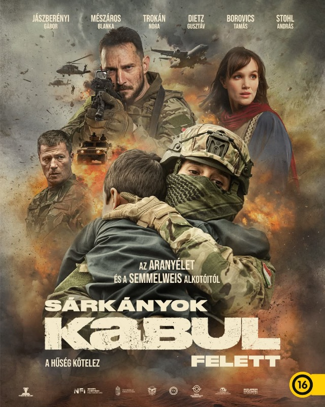

Dragons over Kabul
-
Client
Unnamed as Contractor
-
Date
01-08-2025
-
Project link
PROJECT DESCRIPTION
- Role: 3D Generalist / Technical Artist
- Core Stack: Houdini (Solaris/Karma), USD, Nuke, Editorial Basics
- Main Focus: Asset Variant Preparation, Set Extensions & Layout, Rendering, Basic Compositing
This project was a live-action action-drama feature film based on a true story.
My main role was to support the 3D pipeline and environment teams with digital set extensions.
I set up a semi-automated asset pipeline to create standardized USD assets with variants,
making it easier for the set-dressing artists to do their work.
I was also responsible for assembling and rendering a few scenes, doing basic compositing work in Nuke for simpler shots,
and helping the editorial team package color-accurate review deliveries.
MY TASKS
-
USD Asset Variants for Set Dressing
I developed a semi-automated process to prepare incoming models as production-ready USD assets.
By building multiple variants into these assets, I made it easier for the set-dressing artists to quickly toggle between different options inside their layouts. -
Set Extensions, Scene Assembly
I helped assemble and expand the digital environments for a few sequences.
Working within Solaris, I positioned assets, managed basic shading, and made sure the digital elements aligned properly with the live-action plates. -
Lighting and Rendering
For a handful of shots, I set up the basic lighting and rendered the passes using Houdini's Karma.
My focus was simply ensuring the digital extensions matched the plate lighting and rendering them out efficiently. -
Nuke Compositing
When the shots weren't overly complex, I helped the compositing team in Nuke.
I did basic integration of our 3D elements with the live-action footage, checking grain and black levels to make the final match invisible. - Editorial Technical Support I assisted the editorial workflow by ensuring that all daily review playblasts were exported with the correct color spaces and naming conventions, guaranteeing consistent visuals during team reviews.